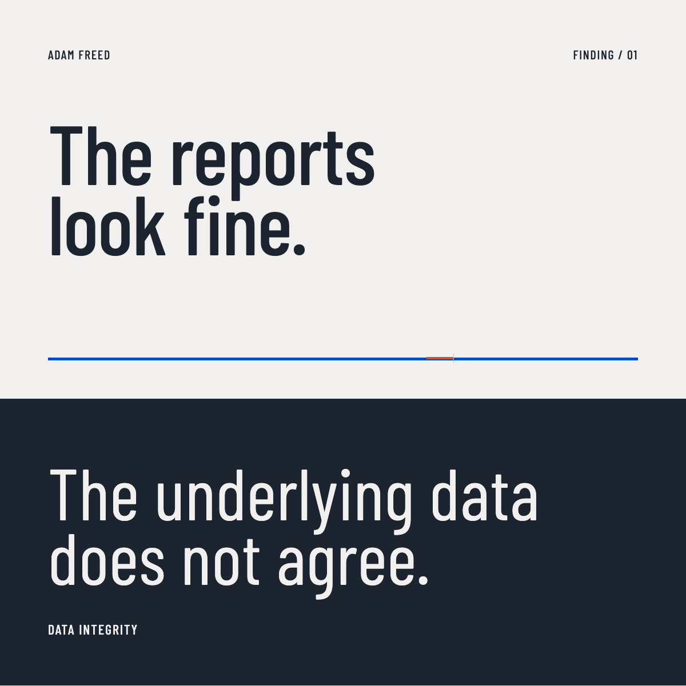

Section C
Editorial and PR
See editorial cover and story concepts for Adam.
01
Cover concepts
Editorial concepts that position Adam with clarity and stature.
Concept artwork, not published press.
 Data IntegrityOn speaking terms
Data IntegrityOn speaking terms OperatorThe quiet audit
OperatorThe quiet audit
Field / NotesWhen dashboards lie Seed to SaleMake the numbers agree
Seed to SaleMake the numbers agree02
Article concept
Article concept
On speaking terms
Cannabis data advisor Adam Freed on mismatched reports, seed-to-sale honesty, and building systems operators can trust under scrutiny.
Concept artwork, not published press.
03
Story ideas
When dashboards lie
What founders notice first when reports disagree, and how to map the break without theater.
Seed to sale honesty
Why data integrity is an operating advantage, not only a compliance burden.
The quiet audit
How evidence, assumptions, and handoffs become one shared source of truth.
Accuracy
Use verified facts for every role, project, and impact statement.